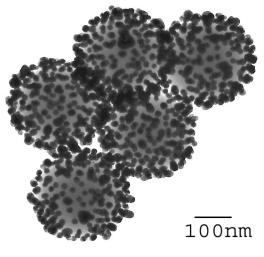
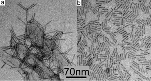
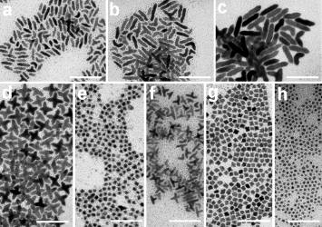
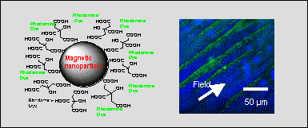

Yudhisthira Sahoo, Ph.D. |
|
My research interests at ILPB are the following. I work with a team of faculty members and students within the instute as well as outside the department. My research in Magnetic Particles and their properties.
2. Semiconductor quantum dots: with particular focus on diluted magnetic semiconductors, IV-VI semiconductors for photodetection and photovoltaics.
3. Plasmonics of gold and silver nanoshells.
4. Surface chemistry and photonic properties of silicon nanoparticles
Some Examples are:
(a) Gold nanoparticles have been attached to the dielectric core polystyrene by using a bifunctional linker molecule (Fig.1). Progressive coverage provides a manipulation of the plasmonic resonance position in the electromagnetic spectrum, where it is shown that the position shifts from the characteristic 520 nm to longer wavelength up to the near infra red. By obtaining the same geometry with silver nanoparticles, we get even a broader range of shifts.
Fig. 1
(b) A method has been developed for the preparation of a biocompatible ferrofluid containing dye-functionalized magnetite nanoparticles that can serve as fluorescent markers. This method entails the surface functionalization of magnetite nanoparticles using citric acid to produce a stable aqueous dispersion, and the subsequent binding of fluorescent dyes to the surface of the particles.

Here is presented a fluoresecence pattern magnetically aligned and visualized in confocal microscope.
(c) We have developed a process to colloidally fabricate successive batches of rod-shaped and “branched” structures of CdSe and PbSe by seeded growth using nanoparticles of noble metals. These nanostructures have the potential for enhancing photovoltaic effects. Different shapes of PbSe nanocrystals are shown in the Figure.

(d) Colloidally synthesized monosized PbSe quantum dots show size tunable absorbance. The batch of quantum dots have shown the highest ever reported photoconductivity, when measured as a nanocomposite. They are photoactive at the infrared wavelengths, important for telecommunications.
